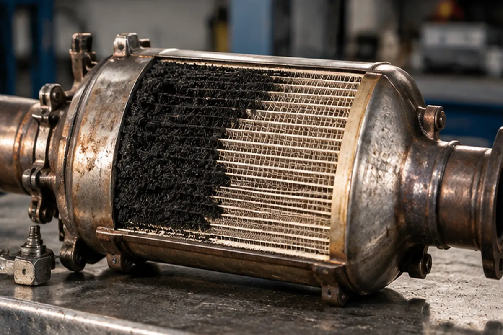
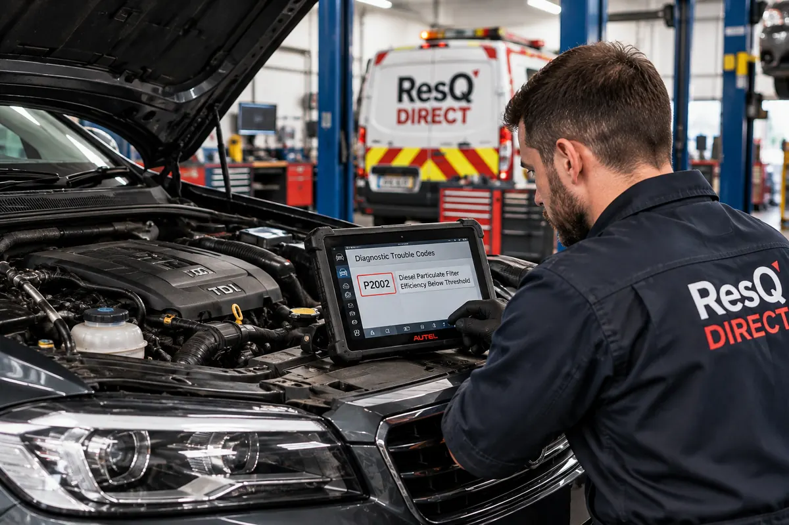

You’re driving through Peterborough when an unfamiliar warning light appears on the dashboard. Your diesel car still moves, but should you try to clear the warning on the A1, book a garage or arrange recovery?
A DPF warning does not always mean your vehicle has broken down. Sometimes the filter needs to complete its normal cleaning process. Persistent warnings or serious engine symptoms, however, should not be ignored.
What Is a DPF and Why Do Diesel Cars Need One?
A diesel particulate filter (DPF) is part of a vehicle’s exhaust system. It captures soot particles produced during diesel combustion before they escape into the atmosphere. Fine particulate matter is harmful to air quality and health; DPFs help reduce these emissions.
A DPF does not eliminate all pollutants or remove carbon dioxide from the exhaust. Its main purpose is to reduce particulate emissions.
How does it work?
The filter traps soot in a porous structure while exhaust gases pass through. The vehicle periodically burns accumulated soot through regeneration. Ash remains and, unlike soot, cannot be removed through ordinary regeneration.
Why Does a Diesel Particulate Filter Become Blocked?
Frequent short journeys are a common contributing factor. The engine and exhaust may not reach the conditions needed to complete regeneration, allowing soot to accumulate.
- Repeatedly interrupted regeneration cycles
- Engine-management or sensor faults
- Problems affecting fuel combustion
- Incorrect engine oil specification
- Poor maintenance or excessive soot production
- Long-term ash accumulation
A warning does not necessarily mean the filter needs replacing. A faulty sensor or another engine issue can create similar symptoms, so diagnosis matters.

DPF Warning Light: Can You Continue Driving?
It depends on the warning, the manufacturer’s instructions and how the engine behaves. A single amber warning on a normally running vehicle may mean regeneration is needed. Persistent warnings with reduced power, overheating or other faults need more caution.
DPF warning light decision guide
| What you notice | What it may indicate | Sensible next step |
|---|---|---|
| Amber DPF warning; normal driving | Regeneration may be needed | Check the handbook and follow manufacturer guidance |
| Warning persists after the recommended procedure | Incomplete regeneration or another fault | Arrange professional diagnosis |
| DPF warning plus engine-management light | Possible engine or emissions fault | Seek garage advice promptly |
| Limp mode or substantial power loss | Restricted engine performance | Do not continue where performance makes driving unsafe |
| Overheating or serious abnormal running | Potentially serious fault | Stop safely and arrange assistance |
| Vehicle will not start or move safely | Vehicle is not driveable | Arrange suitable vehicle recovery |
Can You Clear a Blocked DPF by Driving on a Motorway?
Sometimes, but not always. A partially loaded DPF may regenerate during a suitable manufacturer-recommended drive. Longer journeys at appropriate engine loads can help the exhaust reach sufficient temperatures.
Simply driving at 70 mph does not guarantee regeneration. There is no universal speed, engine RPM or journey length for every diesel vehicle.
Passive, Active and Workshop Regeneration Explained
Passive regeneration
Occurs naturally when suitable driving conditions produce sufficiently high exhaust temperatures.
Active regeneration
The engine-management system raises exhaust temperature to burn off soot. Depending on the vehicle, you may notice higher idle speed, cooling fans or temporary changes in fuel consumption.
Workshop-assisted regeneration
A qualified technician may use diagnostic equipment to initiate a controlled regeneration. It is not appropriate for every fault: serious blockages or underlying problems may require repairs first.
| Type | How it happens | Driver involvement |
|---|---|---|
| Passive | Suitable driving conditions generate heat | Normal driving |
| Active | Vehicle automatically raises exhaust temperature | Allow completion when practical |
| Workshop-assisted | Controlled procedure using diagnostics | Qualified technician required |
What Happens When a DPF Becomes Severely Blocked?
As soot builds up, exhaust backpressure can increase and engine performance may deteriorate. Symptoms can include reduced acceleration, persistent warnings, increased fuel consumption and restricted power.
Some vehicles enter limp mode, which limits performance in response to detected faults. Limp mode can have other causes too, and it does not guarantee the car is safe to drive. A vehicle struggling to accelerate may be unsafe at a busy junction or when joining fast-moving traffic.
When Is Vehicle Recovery the Safer Option?
Not every DPF fault needs a recovery truck. If the vehicle operates normally and the manufacturer permits continued driving, you may be able to follow the recommended procedure or reach a garage.
Recovery may be appropriate if:
- The engine will not start or repeatedly stalls
- Power loss makes driving unsafe
- The vehicle is overheating or displays serious warnings
- A mechanic advises against further driving
- The vehicle cannot safely reach a garage
What if the car is in limp mode?
A short journey to a nearby garage might be possible for some vehicles, but restricted acceleration can make other journeys unsafe. Consider the fault, route, vehicle condition and professional advice.
DPF Problems in Peterborough: What Do the Statistics Show?
Peterborough combines urban roads, residential areas and major routes such as the A1, A47 and A15. Journeys around Yaxley, Whittlesey, Stamford and Huntingdon vary widely: some drivers regularly travel long distances, while others mainly make short local trips.
Frequent short journeys can make regeneration harder for some diesel vehicles, but they do not prove a particular car will develop a DPF fault.
How many diesel cars are registered in Peterborough?
The Department for Transport publishes local-authority vehicle licensing figures by fuel type in its VEH0105 vehicle licensing tables. These measure registered vehicles, not where they are driven or how often they break down.
How many Peterborough cars experience blocked DPFs?
No verified public count has been identified for blocked-DPF incidents specifically occurring in Peterborough. It would be misleading to treat diesel registration totals as DPF failure figures.
How often do DPF problems require recovery locally?
No reliable published Peterborough-specific figure has been identified for DPF-related recoveries. Some warnings can be resolved through appropriate regeneration; others need garage diagnosis; serious faults may require transport.
Does a Blocked DPF Need Cleaning or Replacing?
Not necessarily. Depending on diagnosis, possible solutions include completing regeneration, repairing a sensor or engine fault, workshop-assisted regeneration, specialist cleaning or replacing a damaged filter.
Replacing the DPF without fixing the underlying problem may lead to the same issue returning. A qualified garage should investigate fault codes and the emissions system before recommending an expensive repair.

Is Removing a DPF Legal in the UK?
Removing a factory-fitted DPF is not an acceptable shortcut. UK government guidance says a missing DPF, where originally fitted, will cause an MOT failure. Removing it will also almost invariably make the vehicle illegal for road use because it no longer meets its original emissions requirements.
Potential fines under the relevant rules can reach £1,000 for a car or £2,500 for a light goods vehicle. Seek a compliant repair instead.
How Can You Reduce the Risk of DPF Problems?
- Follow the manufacturer’s servicing schedule
- Use the specified engine oil
- Investigate engine-management warnings promptly
- Follow handbook instructions when a DPF warning appears
- Avoid repeatedly interrupting regeneration when practical
- Repair engine faults that may increase soot production
- Seek advice if the warning repeatedly returns
If nearly all your journeys are very short, consider whether a diesel vehicle suits your driving pattern.
What Should You Tell a Recovery Operator?
Clear information helps the operator assess safe loading and transport. Have these details ready:
- Vehicle make, model and registration
- Exact collection location or postcode
- Destination garage or delivery address
- Whether the engine starts
- Whether the vehicle moves under its own power
- Whether steering, brakes and wheels work normally
- Dashboard warnings or fault messages
- Whether the vehicle is in limp mode
Also mention locked wheels, a stuck electronic parking brake or a vehicle stuck in park. A car that rolls and steers freely can require different loading arrangements from one with immobilised wheels.
For more detail, read Can a Non-Running Car Be Transported?
Frequently Asked Questions
Can I drive with the DPF warning light on?
Sometimes. An amber warning on an otherwise normally running car may allow a manufacturer-approved regeneration procedure. Additional warnings or abnormal behaviour require caution.
Will a motorway journey clear my DPF?
It may help a partially loaded filter regenerate in suitable conditions, but it will not fix every blockage or underlying fault.
Can a blocked DPF cause limp mode?
Yes. DPF-related faults can contribute to restricted engine performance, although limp mode has other possible causes.
Can a blocked DPF stop a car starting?
Some serious DPF-related or engine-management faults can prevent restarting on certain models. A no-start condition needs diagnosis.
Does every blocked DPF require recovery?
No. Recovery is relevant when the car cannot safely continue or a professional advises against driving it.
Can a DPF be cleaned instead of replaced?
Sometimes. It depends on the blockage, filter condition and underlying faults.
Is it illegal to remove a DPF?
Removing a factory-fitted DPF will cause an MOT failure and will almost invariably make the vehicle unlawful for road use.
Can ResQ Direct transport my car to a garage?
Contact ResQ Direct with your vehicle’s condition, location and destination so suitable recovery or transport arrangements can be assessed.
Final Advice: Don’t Ignore a DPF Warning
A DPF warning does not always mean an expensive repair or an immediate breakdown. Follow the manufacturer’s guidance and pay attention to how the vehicle behaves.
If the vehicle loses substantial power, overheats, stops running or cannot safely reach a garage, recovery may be the better option.
Sources and Further Reading
UK government and motoring guidance; reviewed October 2026. Vehicle-specific instructions always take precedence.
- RAC — Diesel particulate filters: everything you need to know
- GOV.UK — Diesel particulate filters
- GOV.UK — MOT inspection manual, Section 8
- Department for Transport — Vehicle licensing statistics, VEH0105
- Department for Transport — Vehicle licensing statistics 2025
This article offers general guidance, not a diagnosis or a substitute for manufacturer instructions.
DPF WARNING AND YOUR VEHICLE CAN’T CONTINUE?
Need vehicle recovery in Peterborough?
Tell ResQ Direct where your vehicle is, where it needs to go and whether it starts, rolls and steers. We can discuss suitable recovery or transport arrangements.
GET A QUOTE